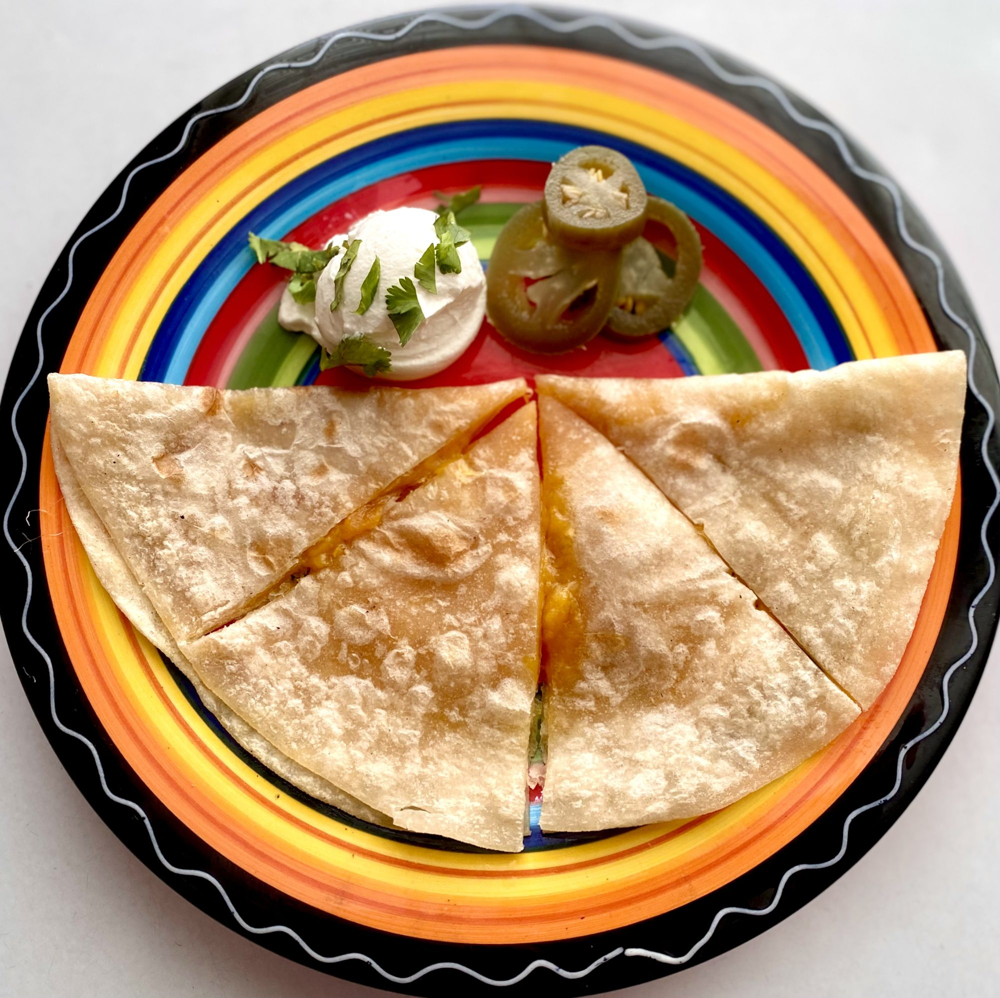

Quesadilla Recipe

Ingredients
- Corn tortillas
- Mozzarella cheese
Steps
- Heat pan or comal to medium-high heat
- Heat tortillas until tortilla starts rising
- Flip tortilla then add cheese to one half of tortilla
- Fold quesadillas in half and heat up for half a minute
- Flip quesadilla over
- Remove and enjoy